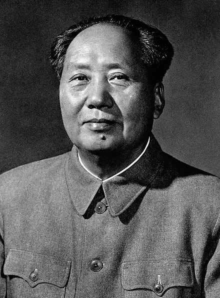

Mao Trạch Đông (Trung văn phồn thể: 毛澤東; giản thể: 毛泽东; bính âm: Máo Zédōng; 26 tháng 12 năm 1893 – 9 tháng 9 năm 1976), tự Nhuận Chi (潤之) ban đầu là Vịnh Chi (詠芝), sau đổi là Nhuận Chi (潤芝, chữ "chi" 之 có thêm đầu chữ thảo 艹), bút danh: Tử Nhậm (子任). Mao Trạch Đông là Chủ tịch Đảng Cộng sản Trung Quốc từ năm 1943 đến khi qua đời. Dưới sự lãnh đạo của ông, Đảng Cộng sản Trung Quốc đã giành thắng lợi trong cuộc nội chiến với Quốc Dân Đảng, lập nên nước Cộng hòa Nhân dân Trung Hoa năm 1949 và trở thành đảng cầm quyền ở Trung Quốc. Vào thời đỉnh cao của sự sùng bái cá nhân, ông được tôn là người có bốn cái "vĩ đại": Người thầy vĩ đại, Lãnh tụ vĩ đại, Thống soái vĩ đại, Người cầm lái vĩ đại.

.
Mười năm cuối đời của Mao Trạch Đông gắn liền với 10 năm Đại Cách mạng văn hóa Trung Quốc. Trong 10 năm đó, ông đã sống, làm việc và sinh hoạt như thế nào, đối với những sai lầm của cuộc Đại cách mạng văn hóa, ông đã cùng các đồng chí của mình xử lý ra sao… tất cả sẽ được tái hiện lại trong từng trang sách.
Cuốn “10 năm cuối đời của Mao Trạch Đông” sẽ cung cấp cho độc giả những thông tin về Mao Trạch Đông trong quãng thời gian này, những vấn đề, sự kiện mà cuốn sách đề cập tới được viết từ góc nhìn chân thực, giản dị của những người lính cảnh vệ thân cận với ông.
Mời bạn đón đọc.
Đêm trước sự kiện "13 tháng 9", Mao Trạch Đông lòng dạ bồn chồn, suốt đêm không ngủ. Từ trước đến nay ông không muốn tăng cường lực lượng cảnh vệ, đêm đó đột nhiên ông hỏi: "Các cháu cảnh vệ có mang theo súng và đạn không?" Đội trưởng cảnh vệ đáp: "Không chỉ có súng ngắn mà còn có cả súng tiểu liên và súng máy, một hai trăm tên địch đến cũng đối phó được". Mao Chủ tịch dặn: "Có kẻ xấu, cần tăng cường cảnh giác"...
Trong suốt 10 năm cuối đời của Mao Trạch Đông, tức là 10 năm Đại Cách mạng Văn hóa, tôi làm công tác bảo vệ, không lúc nào rời xa ông, đã trải qua rất nhiều áp lực, khó khăn, chịu không ít điều oan ức, đồng thời gặp rất nhiều nguy hiểm mà bản thân không thể lường trước được.
Công tác bảo vệ bao gồm rất nhiều nội dung, liên quan đến rất nhiều ban ngành, bản thân tôi chỉ làm được một số việc nhỏ trong muôn vàn công việc đó. Vậy tôi làm công việc gì? Kể ra thì rất đơn giản, trong 10 năm, tôi là trung đội phó, trung đội trưởng, đại đội phó..., nhưng dù chức vụ có thay đổi thì công việc của tôi nhìn chung bao gồm một số việc sau: chỉ huy phân đội (hơn chục người, vài chục người, nhiều nhất là hơn một trăm) chiến sĩ cảnh vệ bảo vệ Mao Trạch Đông; tham gia trực ban, nhận giao ban; đưa đón các vị khách quý trong nước và nước ngoài đến gặp ông. Họ là những người nhận được thông báo đến dự hội nghị, hoặc được hẹn trước gặp Chủ tịch, hoặc là chỉ muốn được nhìn tận mắt dung nhan ông, bất luận là đối tượng nào, chúng tôi đều không được phép qua loa đại khái.
Một công việc khác là mỗi lần Mao Chủ tịch ra ngoài thị sát, tôi đều theo tháp tùng. Lực lượng bảo vệ đi theo đều tuân theo chỉ thị và sự sắp xếp của cấp trên, đồng thời căn cứ vào các yeu tố: thời gian, lộ trình, tình hình chính trị nơi đến..., để đưa ra kế hoạch và phương án bảo vệ thích hợp. Tổ chức lực lượng bao gồm các yếu tố: số người, biên chế đội hình, trang bị và cơ sở vật chất, bố trí ăn ở và canh gác khi dừng chân giữa đường..., tất cả các công tác đó tôi đều có mặt, sắp xếp, kiểm tra đôn đốc và tổ chức thực hiện. Cụ thể, một số lần gặp và tiếp kiến Hồng vệ binh, gặp các nhân vật nổi tiếng và quen biết, bất luận là cuộc gặp nào, chúng tôi đều tận tâm tận lực, bố trí chu toàn công tác bảo vệ, một phút cũng không xao lãng. Điều khiến tôi vui mừng và được an ủi rất nhiều là, chúng tôi hoàn thành tốt công việc được giao, mục tiêu đã đạt được, không để xảy ra sai sót dù là nhỏ nhất.
Đối với đội ngũ cảnh vệ và công tác bảo vệ, Mao Trạch Đông có tin tưởng không? Có bằng lòng không? Điều này không thể chỉ nói vài câu mà rõ được. Song, điều tôi không bao giờ quên là đêm trước của sự kiện ngày 13 tháng 9. Một người luôn tự tin vui vẻ như Mao Chủ tịch, vậy mà có thời kỳ không biết tại sao lại rơi vào tình trạng buồn bã, vẻ đăm chiêu hiện rõ trên nét mặt. Không biết Chủ tịch đã gặp phải hay phát hiện ra biến cố xấu nào, hoặc là ông dự cảm sẽ xảy ra sự kiện nào đó. Chủ tịch trở nên đăm chiêu tư lự, lo lắng bất an, rất ít khi chúng tôi thấy ông cười, những câu nói khôi hài, đầy tự tin và có sức thuyết phục thường ngày của ông cũng biến đi đâu mất. Mấy ngày liền Chủ tịch ăn uống rất ít rồi đột nhiên mắc bệnh mất ngủ.
Mao Chủ tịch nghỉ ngơi không tốt, luôn ở trong trạng thái căng thẳng, những vất vả bao năm qua tích tụ lại, giờ phản ánh rõ nét lên sức khỏe ông, khiến chúng tôi vô cùng lo lắng.
Một hôm, trời sắp sáng mà Chủ tịch vẫn chưa ngủ được, ông bươc ra ngoài đi bách bộ. Một người gần 80 tuổi, cho dù trước đó sức khỏe rất tốt nhưng khi đã về già, sức khỏe bị thời gian gặm nhấm dần, đây là vấn đề không thể bị coi nhẹ.
Cũng giống như ngày thường, tôi vội vàng đi sát phía sau ông. Đi ra đến cửa, Mao Chủ tịch nhìn thấy chiến sĩ cảnh vệ đứng gác, liền hỏi: "Trường Giang, cảnh vệ đứng gác có mang theo súng và đạn không?"
Nghe thấy Chủ tịch hỏi như vậy tôi bất giác giật mình. Thường ngày Chủ tịch không hỏi câu này. Chúng tôi đều biết, từ trước đến nay Mao Chủ tịch không muốn nhìn thấy hình ảnh lính bảo vệ vai đeo súng, thắt lưng khoác bao đạn, nét mặt nghiêm trang, đứng như bất động. Để giảm bớt khô cứng và ồn ào, chúng tôi giảm bớt số người gác, đại bộ phận cảnh vệ mặc thường phục, không mang theo súng trường, tất nhiên là có mang theo súng ngắn giấu trong người. Đứng trước mặt Mao Chủ tịch là một chiến sĩ mặc thường phục, hai tay không cầm vũ khí, trông giống như một người nhàn tản đang dạo chơi vậy. Đưa mắt nhìn, Chủ tịch nhận ra ngay người chiến sĩ cảnh vệ hiền lành.
Chủ tịch rất thương yêu chiến sĩ, quan tâm tới nỗi khổ của quần chúng nhân dân. Đại bộ phận chiến sĩ cảnh vệ đều xuất than từ tầng lớp nông dân và công nhân. Chủ tịch luôn gần gũi chuyện trò, hỏi han các chiến sĩ. Từ những câu trả lời thật thà như đếm, không e dè giấu giếm của các chiến sĩ, Chủ tịch nắm được tình hình thực tế và tâm tư nguyện vọng của quần chúng nhân dân.
Tiến hành "điều tra nông thôn", tìm hiểu bộ mặt thật của nông thôn là mục tiêu theo đuổi suốt đời của Mao Chủ tịch. Từ những năm của thập kỷ 50 thế kỷ XX, không dưới một lần Mao Chủ tịch phái tôi về quê cũ (nhà tôi ở nông thôn) để "điều tra nông thôn", trở về báo cáo cho Chủ tịch.
Bất luận là khi nói chuyện vui hay nghe báo cáo công việc, Chủ tịch luôn hỏi đến khi nào hiểu cặn kẽ mới thôi. Những điều các chiến sĩ cảnh vệ cung cấp có khi có tác động rất lớn tới quyết sách của Mao Chủ tịch. Các cuộc trò chuyện của Mao Chủ tịch với chiến sĩ không những giúp tăng thêm sự gắn bó tình cảm giữa lãnh tụ và chiến sĩ mà còn - điều này khiến tôi kinh ngạc nhất -, giúp Chủ tịch hiểu chiến sĩ tới tận chân tơ kẽ tóc.
Khi gặp các chiến sĩ đang làm nhiệm vụ canh gác, ông đều gọi đúng tên, thậm chí biết cả ai trực ca nào, quê ở đâu, gia đình có mấy người, cuộc sống ra sao... Còn việc cảnh vệ có mang theo súng đạn hay không, trong tiềm thức của tôi, trước đây ông không hề quan tâm, thậm chí ngay đến sự an toàn của mình, ông cũng không bận tâm, Chủ tịch hoàn toàn tin tưởng vào lòng trung thành và năng lực của các chiến sĩ. Đứng giữa hai người, một người có một trái tim và một người được trang bị vũ khí, ông tin tưởng vào uy lực của người có trái tim hơn.
Nghe thấy Chủ tịch hỏi, tôi liền đáp: "Có ạ!"
Tôi là vậy, luôn nói năng thẳng thắn và ngắn gọn. Hôm nay chơt thấy Mao Chủ tịch quan tâm đến vấn đề này, tôi bất giác nói them: "Không chỉ có mang theo súng ngắn mà còn mang theo cả súng tiểu liên và súng máy, đạn dược cũng rất nhiều, một hai trăm tên địch đến cũng đối phó được!"
Nghe xong, Mao Chủ tịch gật đầu rồi nói: "Có kẻ xấu, cần nâng cao cảnh giác...!" Ông không nói thêm, cũng không hỏi gì thêm, men theo bóng cây trên con đường nhỏ, chậm rãi bước đi...
Mao Chủ tịch thích leo núi và rất thích bơi lội. Từng có tờ báo công bố, Mao Chủ tịch đã bơi qua sông Trường Giang 16 lần. Tôi không có sự thống kê đó, nhưng tính sơ qua, con số thực tế chắc sẽ lớn hơn rất nhiều. Bản thân Mao Chủ tịch rất thích bơi lội, ông còn động viên mọi người cùng bơi, đặc biệt là lớp trẻ, để rèn luyện sức khỏe, hòa vào tự nhiên để đấu tranh với thế giới tự nhiên, tích lũy kinh nghiệm, nâng cao năng lực công tác.
Mao Chủ tịch từng nói: "Sông Trường Giang vừa rộng vừa sau, là nơi tốt cho bơi lội". Ông còn nói: "Trường Giang nước sâu và chảy mạnh, có thể là nơi rèn luyện sức khỏe, rèn luyện ý chí."
Ngay cả khi tuổi đã cao, sức khỏe không thể chống lại sự lao hóa của thời gian, Chủ tịch vẫn thích bơi ở những nơi có ghềnh thác và nước xoáy. Cứ mỗi lần Chủ tịch bơi, tôi hoặc một vài đồng chí khác lại lội xuống trước để kiểm tra nhiệt độ của nước, lưu tốc của dòng nước, kiểm tra xem đoạn sông nào nước chảy mạnh, nước xoáy, ghềnh thác, kiểm tra chỗ đặt chân xuống nước và chỗ lên bờ... Tóm lại, cần tìm hiểu kỹ xem liệu có bị nguy hiểm gì trong lúc bơi không. Thông qua biện pháp thử nước, chúng tôi nắm khá chắc tình hình của sông hồ, qua đó đề ra phương án bảo vệ Chủ tịch trong lúc bơi.
Mao Trạch Đông rất tin tưởng vào việc làm của chúng tôi. Bat luận là Chủ tịch bơi ở đâu, chúng tôi đều bố trí anh em bởi xung quanh.
Trong những lần bơi cùng Chủ tịch, hứng thú nhất là lần tập bơi nghệ thuật; lần bơi khó nhọc nhất là lần bơi cuối cùng của ông, dường như ông cũng đã cảm nhận được điều đó.
Ngày 9 tháng 9 năm 1976, sau khi Mao Trạch Đông tạ thế, công việc của những người làm công tác bảo vệ như chúng tôi không vì thế mà giảm đi. Chúng tôi không được phép xả hơi. Trong những ngày cả nước khóc thương tưởng nhớ Chủ tịch, chúng tôi luôn túc trực bên linh cữu Mao Trạch Đông. Công việc của chúng tôi lúc này có hơi khác trước, nội dung bảo vệ cũng có sự thay đổi, ai cũng muốn được túc trực bên ông, công tác bảo vệ vẫn vận hành trơn tru. Khi linh cữu Mao Trạch Đông được chuyển vào hội trường lớn để quần chúng nhân dân kính viếng, chúng tôi là những người trực tiếp chuyển linh cữu, bảo vệ linh cữu, hoàn thành nhiệm vụ được giao.
Tang lễ được cử hành ở quảng trường Thiên An Môn.
Kết thuc lễ tang, di hài của ông tạm thời được chuyển đến bảo quản dưới hầm ngầm, chúng tôi cùng đội ngũ các nhà khoa học làm tiếp một số công việc liên quan khác. Chính tại đây tôi quen đồng chí Từ Tĩnh là người phụ trách Nhà tưởng niệm Mao Trạch Đông bây giờ. Trong lúc các nhà khoa học đang tiến hành công tác bảo quản thi hài Mao Chủ tịch bằng phương pháp kỹ thuật, chúng tôi tuyệt đối tuân theo các mệnh lệnh từ họ như: kiểm tra nhiệt độ và độ ẩm phòng, tiêu độc, sát khuẩn,... công việc mệt nhọc, đầy mùi hóa chất độc hại nhưng chúng tôi vẫn tình nguyện làm. Công việc trên kéo dài đến tháng 8 năm 1977, khi kỷ niệm đường Mao Chủ tịch xây xong, chúng tôi bắt tay vào việc chuyển di hài ông tới đó. Đến đây, công việc của các chiến sĩ cảnh vệ chúng tôi đã hoàn thành được một công đoạn.
Như vậy, tính từ năm 1950 khi tôi được điều động đến bảo vệ ông đến năm 1977 là 27 năm. 10 năm cuối đời của Mao Chủ tịch cũng chính là 10 năm xảy ra Đại Cách mạng Văn hóa, đó là nhưng năm tháng sai lầm. Trong 10 năm đó tôi là người tận mắt chứng kiến toàn bộ quá trình thay đổi xấu đi về sức khỏe của Mao Trạch Đông.
Đối với Mao Chủ tịch, đồng chí Đặng Tiểu Bình từng đánh giá như thế này: "Nếu không có sự lãnh đạo tuyệt vời của đồng chí Mao Trạch Đông, cách mạng Trung Quốc rất có thể (khả nang này là rất lớn) không giành được thắng lợi như ngày nay... Nói không có Mao Chủ tịch thì không có Trung Quốc mới cũng không có gì là quá cả." Chúng ta không thể lấy một tiêu chuẩn nào đó thật hoàn mỹ để yêu cầu Mao Trạch Đông, sự thật Mao Chủ tịch là một vĩ nhân, chúng ta mãi nhớ đến Người.
Tất cả đã trở thành dĩ vãng. Một số chi tiết được kể ra ở trên là kỷ niệm của tôi tưởng nhớ đến Mao Chủ tịch